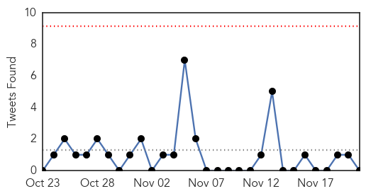
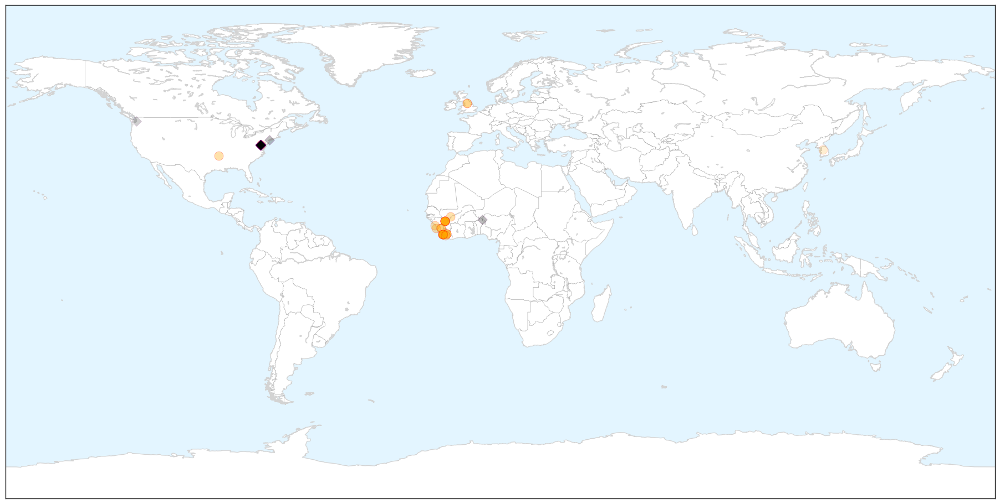

Unknown
30-Day Web Trend
0 alerts, 0 warnings

30-Day Twitter Trend
0 alerts, 0 warnings

Article Locations


Article Confidences

Top Articles:
- 0.952
- 838 sicked in 38 states resulting from salmonella outbreak in cucumbers, none in Tennessee. News Source
- 0.949
- Chipotle E. Coli Outbreak Now Reported in 6 States
- 0.935
- Chipotle E. Coli Outbreak Reaches Six States, Shares Tumble
- 0.902
- Chipotle E. coli outbreak reaches six states, shares tumble
- 0.899
- Feature: Laos' commitment to polio response after fatal case attracts international kudos - Xinhua
- 0.897
- Chipotle E. coli outbreak reaches six states, shares tumble
- 0.892
- UPDATE 4-Chipotle E. coli outbreak reaches six states, shares tumble
- 0.835
- Key dates in E. coli outbreak linked to Chipotle
- 0.831
- DE health officials discuss antibiotic resistance awareness
- 0.830
- Chipotle E. coli outbreak reaches six states, shares tumble
- 0.827
- Chipotle E. coli outbreak reaches six states, shares tumble
- 0.820
- Chipotle E. Coli Outbreak Spreads
- 0.817
- Chipotle E. coli outbreak now linked to illness in 6 states - KTVQ.com
- 0.796
- E. coli outbreak linked to Chipotle reaches California
- 0.782
- Key dates in E. coli outbreak linked to Chipotle
- 0.780
- Water disconnected at Zomba Central Hospital, patients, guardians helpless
- 0.780
- Chipotle E. Coli outbreak now linked to illness in 6 states
- 0.765
- Chipotle Mexican Grill, Inc (CMG) Stock Tumbles As E. Coli Hit Four Other States
- 0.760
- E. coli outbreak linked to Chipotle expands to 6 states
- 0.743
- E. coli Springs Up At Ohio Chipotle
- 0.714
- E. Coli Outbreak Linked to Chipotle Spreads to Six States, 40-Plus Cases : People.com
- 0.694
- CDC reports E. coli outbreaks linked to Chipotle in 6 states
- 0.688
- WBEN NewsRadio 930 : Buffalo & Niagara Falls, NY
- 0.673
- The number of people on Beaumont Hospital waiting lists shows why the place is overcrowded
- 0.669
- D.C. health department to track CRE in local facilities
- 0.659
- Limited Space Jeopardize Health Of Thousands In Malakal PoC Says MSF
- 0.627
- Chipotle’s Shares Take a Tumble as More Cases Reported in Other States
- 0.603
- Suspected Paris attacks scout arrested in Turkey
- 0.603
- Deadly suicide bombings target Cameroon's Far North
- 0.603
- Paris attacks do not pose ‘Charlie Hebdo’ dilemma for French Muslims
- 0.603
- French police extend detention of ‘unwitting’ host to Paris attack suspects
- 0.603
- Hasna Aitboulahcen, from ‘party girl’ to suspected terrorist
- 0.603
- Mashable profiles victims of Paris attacks in 140 characters
- 0.599
- The Chipotle E. Coli Outbreak Is Still Spreading
- 0.586
- E. coli outbreak linked to Chipotle expands to Ohio
- 0.583
- Contributing Op-Ed Writer: Are Good Doctors Bad for Your Health?
- 0.580
- Those with Rheumatoid Arthritis More Likely to Die Early
- 0.580
- Inverloch Cheddar Cheese recalled over listeria fears
- 0.579
- Greeley police probe sepsis tattoo death, but have not launched criminal investigation
- 0.567
- Finally: Malawi government to recruit newly graduated doctors
- 0.557
- E. coli outbreak linked to Chipotle expands to six states - Times-Gazette
- 0.553
- APS warns of possible norovirus outbreak at Comanche Elementary
- 0.550
- Workers in public hospitals stage peaceful demo, asks parliament to intervene
- 0.511
- Further need to improve patient safety
Top Tweets:
-
No tweets found for Nov 21, 2015
Ebola
30-Day Web Trend
0 alerts, 0 warnings

30-Day Twitter Trend
9 alerts, 15 warnings

Article Locations

X

Article Confidences

Top Articles:
- 1.000
- Family struck with Ebola after Liberia declared free of virus twice
- 1.000
- Ebola Returns To Liberia After Being Declared Virus Free
- 1.000
- Family struck with Ebola after Liberia declared free of virus twice
- 1.000
- Three new Ebola cases confirmed in Liberia
- 1.000
- Three new confirmed cases in previously Ebola-free Liberia:
- 1.000
- Three family members in Liberia catch Ebola
- 1.000
- Sierra Leone declared Ebola-free by WHO
- 0.999
- National News - WYFF Home
- 0.999
- 3 new Ebola case in Liberia 2 months after all-clear
- 0.999
- Liberia confirms fresh cases
- 0.999
- 3 new confirmed cases in previously Ebola-free Liberia: WHO
- 0.999
- As Ebola stalks West Africa, medics fight mistrust, hostility
- 0.999
- Ebola case in Liberia confirmed by WHO
- 0.999
- Ebola Resurfaces In Liberia As Three People Test Positive For Deadly Virus
- 0.999
- Liberia confirms new Ebola cases after country declared virus free - Xinhua
- 0.999
- Fears of Deadly Ebola Virus Reportedly Resurface in Liberia
- 0.999
- New Ebola Cases Reported in Liberia, Two Months After All Clear Given
- 0.999
- New Ebola case confirmed in Liberia
- 0.997
- Ebola is back in Liberia, and officials are stumped about why
- 0.995
- Ebola cases in 3 family members confirmed in Liberia
- 0.981
- Liberian Government says “U.S. Case Shows Ebola remains international crisis”
- 0.954
- IntraHealthOPEN : As Spirits Rise in Sierra Leone, Technology Offers More than Ebola Recovery
- 0.938
- Warrior Baby: Last Ebola Patient Treated in Guinea
- 0.892
- As Bintou Keita bows out, President calls for enhanced community surveillance and monitoring
- 0.852
- Locking nurse given medal for Ebola work
- 0.819
- Nurse quarantined over Ebola fears sues Gov. Chris Christie
- 0.780
- West Point Residents, Soldiers, Police Clash Over Quarantine In Monrovia
- 0.764
- VP Foh Receives British Red Cross Director
- 0.546
- JIPMER to expand telemedicine network
Top Tweets:
- 0.977
- Ebola Virus - https://t.co/rjd72OgBE0 ebola
- 0.971
- Ebola Resurfaces In Liberia As Three People Test Positive For Deadly Virus - https://t.co/CdtWy26hv7 ebola
- 0.967
- New cases of Ebola found in Liberia health authorities say - https://t.co/0XAwuWFGL0 ebola
- 0.965
- Health authorities: 3 new Ebola cases in Liberia - https://t.co/LXtKzyfz3Z ebola
- 0.943
- New Ebola case hit Liberia after country declared virus free - https://t.co/C4xPdF43MW ebola
- 0.939
- Three new Ebola cases confirmed in Liberia: WHO - https://t.co/J5nbINY5F8 ebola
- 0.938
- Ebola crisis: Liberia confirms fresh cases - https://t.co/FBroWhPUwr ebola
- 0.931
- Ebola cases in three family members confirmed in Liberia - https://t.co/RrvWAD2OR5 ebola
- 0.926
- Three New Ebola cases confirmed in Liberia - https://t.co/5E35xtsrpj ebola
- 0.923
- New Ebola cases hit Liberia months after nation declared free of virus - https://t.co/eFOsQWEHwu ebola
- 0.920
- New Ebola cases confirmed - https://t.co/2QyyQK7545 ebola
- 0.913
- Household struck with Ebola after Liberia declared freed from virus twice - https://t.co/zWqg6Aw3ip ebola
- 0.907
- Ebola Resurfaces In Liberia Again - https://t.co/PuV7QuGaOm ebola
- 0.902
- Ebola Is Back in Liberia - https://t.co/2QrFUmWWLv ebola
- 0.898
- Three new cases of Ebola appear in Liberia - https://t.co/sk78Mo8BPd ebola
- 0.892
- Ebola re-emerges in Liberia: three new cases announced - https://t.co/gfkIYevqCW ebola
- 0.891
- The real reason for distrust of Ebola efforts in Sierra Leone - https://t.co/38YUZ47U0w ebola
- 0.885
- WHO identifies three new Ebola cases in Liberia - https://t.co/wv7NWJiH08 ebola
- 0.884
- Ebola Returns To Liberia After Being Declared Virus Free - https://t.co/iBRaPS8EOC ebola
- 0.882
- Ebola returns to Liberia months after nation declared free of virus - CNN International https://t.co/CA9kayDJun ebola EVD
- 0.881
- Three new confirmed cases in previously Ebola-free Liberia - https://t.co/RMyefI6Khk ebola
- 0.879
- Ebola returns to haunt Liberia - https://t.co/KXXydphwqw ebola
- 0.875
- Sierra Leone declared Ebola-free by WHO - https://t.co/PBpZuF1xbm ebola
- 0.873
- No Longer Ebola-Free: Liberia Reports New Case - https://t.co/ol5Dl1K38r ebola
- 0.869
- New Ebola Cases Reported in Liberia Two Months After All Clear Given - https://t.co/1LUD3l6mNE ebola
- 0.869
- Ebola vaccine shows strong response in clinical trails - International Business Times AU https://t.co/QLMRSgf116 ebola EVD
- 0.868
- Liberiya:Icyorezo cya Ebola kiracyahitana abantu - https://t.co/hSOUjMkZ4B ebola
- 0.868
- Ebola - https://t.co/dFuT9RlHZx ebola
- 0.861
- Once again Ebola reappears in Liberia - https://t.co/Y1qHFvfcsu ebola
- 0.859
- Warrior Baby: Last Ebola Patient Treated in Guinea - https://t.co/d1KPWFLSDd ebola
- 0.859
- Ebola vaccine shows strong response in clinical trails - https://t.co/t0uqFDzBeS ebola
- 0.858
- New Ebola case found in Liberia - https://t.co/MEhwrRQVX8 ebola
- 0.852
- The real reason for distrust of Ebola efforts in Sierra Leone - Washington Post https://t.co/JqECq5ozOq ebola EVD
- 0.852
- Liberia suffers new Ebola cases 2.5 months after being declared free of disease - https://t.co/4ciVG3980X ebola
- 0.852
- Ebola returns to Liberia months after nation declared free of virus - https://t.co/RSDOxY8c1p ebola
- 0.851
- Ebola Returns to Liberia Country Was Believed to Be Virus - https://t.co/LUOBObmGun ebola
- 0.849
- Sierra Leone Becomes Third Country to Adopt mHero in Ebola Recovery - https://t.co/v3Wiw6SA6w ebola
- 0.849
- As Spirits Rise in Sierra Leone Technology Offers More than Ebola - https://t.co/RQleDeSFdS ebola
- 0.834
- Ten-year-old being treated for case of Ebola in Liberia - https://t.co/YP2tq5UNJL ebola
- 0.833
- One new confirmed case in previously Ebola-free Liberia - https://t.co/vy6MuGKBox ebola
- 0.833
- One new confirmed case in previously Ebola-free Liberia - https://t.co/RcY2tUOesb ebola
- 0.833
- One new confirmed case in previously Ebola-free Liberia - https://t.co/60AMvBtfUM ebola
- 0.824
- Three family members in Liberia catch Ebola - https://t.co/PGSpfJAKUp ebola
- 0.822
- 'A Good Warrior': Newborn Beats Ebola in Guinea - https://t.co/URJAZYiZSP ebola
- 0.806
- New Ebola cases hit Liberia after country declared virus free https://t.co/9Vm9xSeLGp Africaagainstebola
- 0.801
- Family case cluster ends Liberia's Ebola-free status - https://t.co/EAilMWOeEg ebola
- 0.788
- New Ebola Case Recorded - https://t.co/oEwBpdH2m5 ebola
- 0.772
- Harvard University Online Course To Understand Ebola Outbreak - https://t.co/AJRVXahcBc ebola
- 0.763
- RT: 3 new cases of Ebola confirmed in Liberia < 3 months after the country was declared free of the virus https://t.co/Q7K…
- 0.707
- Reports probe semen Ebola viability survivor eye problems - https://t.co/wlPuGRXQDt ebola
Showing top 50 tweets...